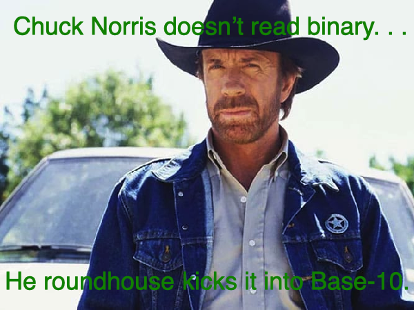
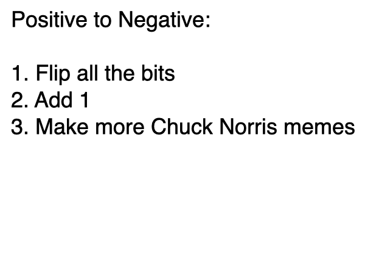
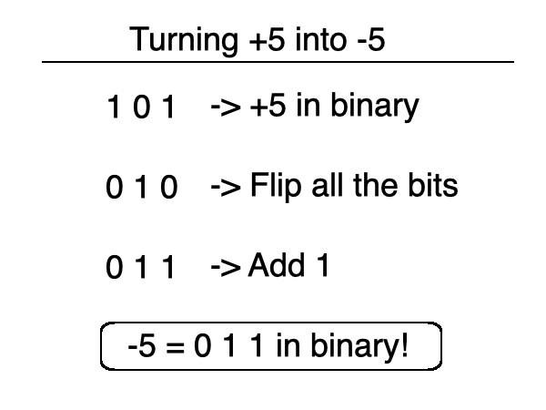
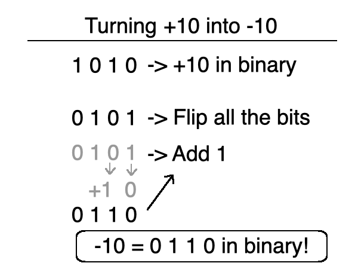
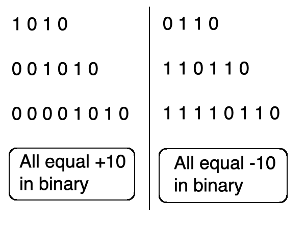
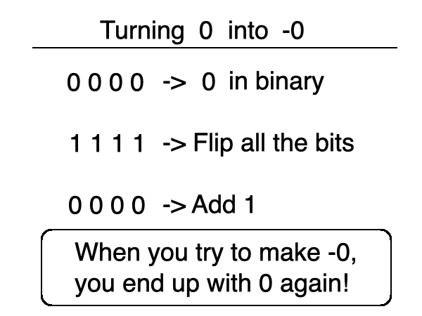

you smart good
Programming Concepts
Negative numbers in binary
So far in our binary lessons, we have only discussed positive numbers. Now seems like a good time to discuss negative numbers in binary.
So how do we turn a positive number into a negative number? The steps may seem confusing, but let's dive into it and we'll discuss the logic later(or never, depending on if I forget).

So what are the steps to make a positive number negative in binary?
Step 1. Flip all the bits.
Step 2. Add 1.
This process is called Two's complement.
Confused yet? Well let's see an example!

We know that 5 in binary is 1 0 1.
Now let's follow the steps of Two's complement to make this -5:
Step 1. Flip all the bits. This is easy. Turn all the 1s into 0s and all the 0s into 1s.
Step 2. Add 1. Don't overthink this one. Just add 1 to this new sequence.
And there you have it! In binary, -5 is represented with 0 1 1!

Let's do another one! What is -10 in binary? Let's follow the same steps and find out!
10 in binary is 1 0 1 0.
First, let's flip the bits. This gives us 0 1 0 1.
Now we have to add 1. Since the 1's column has a 1 in it already, we drop the largest symbol to the smallest symbol and add 1 to the column on the left (sound familiar? It should!).
When we add 1, we get 0 1 1 0. This is -10 in binary!

Now we know that -10 is 0 1 1 0 in binary, but what if we're working with 8 bits? (or a byte, remember? remember?!?)
This sequence is represented using only 4 bits, so what happens to the rest of the bits if it's 8-bit?
To understand this, let's look at +10.
We know that 1 0 1 0 represents 10 in binary. We also know that everything before the left-most 1 is a 0, meaning 10 can also be represented by 0 0 0 0 1 0 1 0.
The first step of making a positive number negative in binary is to flip all the bits, this means that all the 0s become 1s.
So in 8-bits, -10 would be written as 1 1 1 1 0 1 1 0!

Now why the heck are these the steps of Two's complement?
Well, it's because zero exists. Let me explain.
-0 does not exist. According to standard mathematical definitions, zero is neither positive nor negative. So the process of Two's complement exists so that zero will always be represented with 0, even if you try to make it negative.
Let's see this in action. If we're working with 4 bits (a nibble), zero is represented with 0 0 0 0.
Now let's follow the steps and change all the 0s into 1s. But what happens when we try to add 1 to this?
We know to drop the largest symbol to the smallest symbol and add 1 to the column to the left. But we have to do this with every column, becuase they all have a 1 in their place. When we do this, we end up back at 0 0 0 0!
